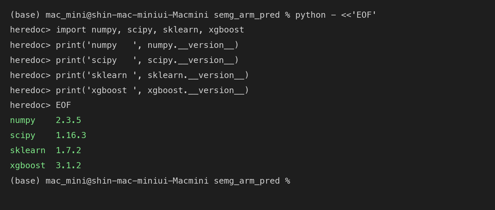
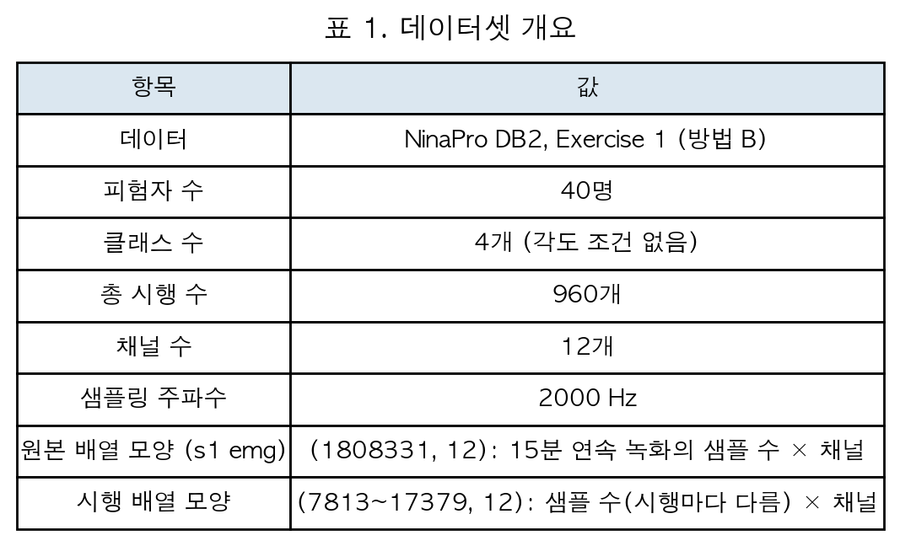
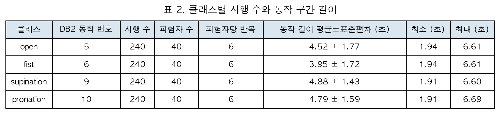
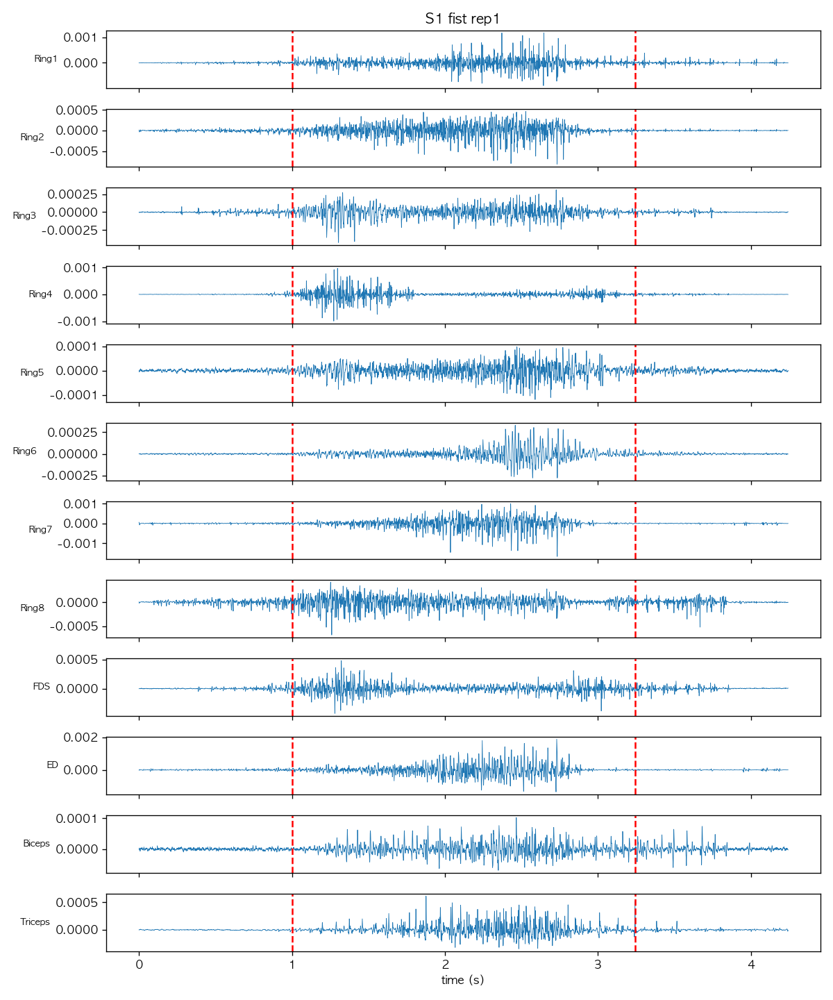
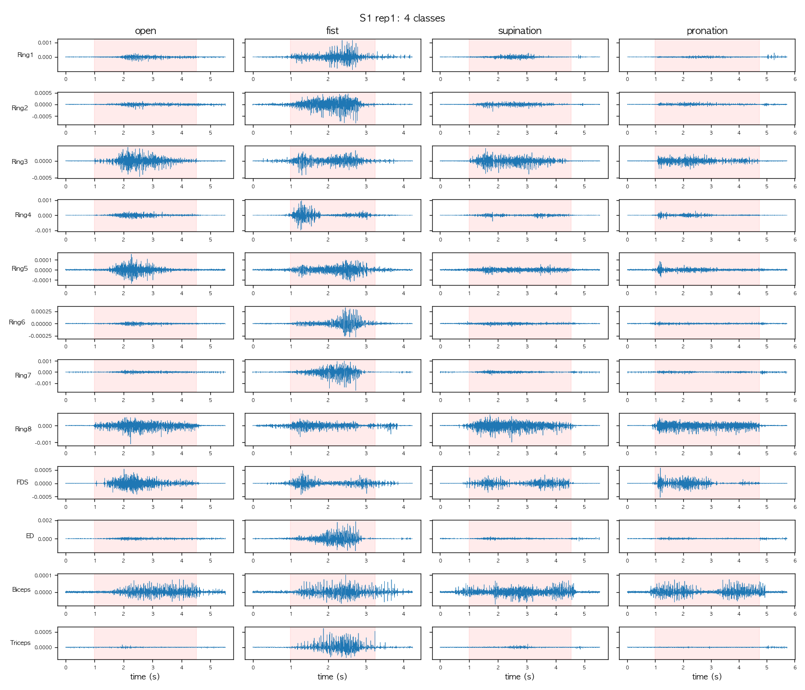

20118701 신재윤
데이터: NinaPro DB2, Exercise 1 (방법 B, 공개 데이터로 축소 구성). 원 논문 데이터와의 차이는 다음과 같다.




그림 1. 피험자 1, fist, 1회차의 12채널 원신호. 빨간 점선은 동작 시작과 끝이다.
DB2에는 팔꿈치 각도 조건이 없어서, 같은 동작을 30°와 60°에서 비교할 수 없다. 대신 같은 피험자의 4개 동작을 나란히 비교하고(그림 2), 이 관찰이 40명 전체에서도 성립하는지 정규화 RMS로 확인했다(표 3).

그림 2. 피험자 1, 1회차의 4개 동작. 채널별로 y축 범위를 맞췄고, 붉은 배경은 동작 구간이다.
| 채널 | open | fist | supination | pronation |
|---|---|---|---|---|
| Ring1 | 0.80 | 1.45 | 0.78 | 0.97 |
| Ring2 | 0.77 | 2.03 | 0.64 | 0.56 |
| Ring3 | 1.06 | 1.46 | 0.79 | 0.68 |
| Ring4 | 1.06 | 1.11 | 0.72 | 1.11 |
| Ring5 | 0.89 | 1.02 | 0.90 | 1.19 |
| Ring6 | 0.82 | 1.32 | 0.91 | 0.95 |
| Ring7 | 0.87 | 1.52 | 0.80 | 0.81 |
| Ring8 | 1.15 | 0.95 | 0.94 | 0.95 |
| FDS | 1.03 | 1.33 | 0.71 | 0.93 |
| ED | 1.03 | 1.34 | 0.70 | 0.93 |
| Biceps | 0.53 | 0.45 | 2.10 | 0.92 |
| Triceps | 0.88 | 1.15 | 1.14 | 0.84 |
| 피험자 간 패턴 상관 | 0.24 | 0.47 | 0.71 | 0.24 |
표 3. 40명 평균 정규화 RMS. 동작 구간의 채널별 RMS를 피험자·채널마다 4개 동작 평균이 1이 되도록 나눈 값으로, 1보다 크면 그 동작에서 상대적으로 많이 활성화된 것이다. 마지막 행은 같은 동작의 12채널 패턴이 피험자끼리 얼마나 비슷한지를 나타낸 상관계수의 중앙값이다.
논문 기준의 8클래스 설계다. 실습에 쓴 DB2에는 각도 조건이 없어서, 실습은 손동작 축만 사용한 4클래스로 진행했다.
손동작 4종 × 팔꿈치 각도 2종 = 8클래스. 각도는 플레이트로 자세를 고정해 측정한다.
| 클래스 | 손동작 | 각도 | 정의 |
|---|---|---|---|
| 30_fist | 주먹 쥐기 (Fist) | 30° | 손가락을 모두 굽힌 상태 |
| 60_fist | 60° | ||
| 30_open | 손 펴기 (Open) | 30° | 손가락을 모두 편 상태 |
| 60_open | 60° | ||
| 30_pronation | 회내 (Pronation) | 30° | 손등이 위로 오도록 전완을 회전 |
| 60_pronation | 60° | ||
| 30_supination | 회외 (Supination) | 30° | 손바닥이 위로 오도록 전완을 회전 |
| 60_supination | 60° |
| 채널 | 측정 근육 | 기능 | 부착 위치 | DB2 대응 채널 |
|---|---|---|---|---|
| Ch1 | 요측수근신근 (Extensor Carpi Radialis) | 손목 젖힘 | 전완 후면 | 없음 (1~8번 전완 둘레 중 일부가 근처) |
| Ch2 | 총지신근 (Extensor Digitorum) | 손가락 폄 | 전완 후면 | 10번 |
| Ch3 | 천지굴근 (Flexor Digitorum Superficialis) | 손가락 굽힘 | 전완 전면 | 9번 |
| Ch4 | 상완이두근 (Biceps Brachii) | 팔꿈치 굽힘 | 상완 전면 | 11번 |
| Ch5 | 상완삼두근 (Triceps Brachii) | 팔꿈치 폄 | 상완 후면 | 12번 |
기기를 제어하려면 손동작과 팔 자세를 함께 알아야 하는데, 같은 손동작이라도 팔꿈치 각도에 따라 EMG 신호가 달라지므로 두 정보는 서로 독립적이지 않다. 그래서 손동작과 각도 라벨을 조합해 8개 클래스(예: 30_fist)로 만들면, 분류기 하나가 동작과 각도의 조합별 신호 패턴을 직접 학습하고 한 번의 예측으로 두 정보를 동시에 얻을 수 있다.
대안은 동작 분류기(4클래스)와 각도 분류기(2클래스)를 따로 두는 방식이다.
| 동시 분류 (8클래스 분류기 1개) | 분리 예측 (4클래스 + 2클래스 분류기 2개) | |
|---|---|---|
| 장점 | 동작과 각도의 상호작용(각도에 따라 동작 신호가 달라지는 것)을 학습할 수 있다. 모델이 하나라 학습과 관리가 단순하다. 두 예측이 서로 모순될 일이 없다. |
클래스당 데이터가 많다 (동작 분류기는 각도 2종의 데이터를 합쳐서 쓴다). 각 분류기가 더 쉬운 문제를 푼다. 각도를 늘려도 각도 분류기만 바꾸면 된다. |
| 단점 | 클래스 수가 곱으로 늘어나 클래스당 데이터가 적다. 동작이 틀리든 각도가 틀리든 똑같이 하나의 오답으로 처리된다. |
동작 분류기가 각도에 따른 신호 변화를 잡음으로 받아들여야 한다. 두 분류기의 오류가 따로 생겨서, 둘 다 맞아야 하는 최종 정확도는 각각보다 낮아진다. |